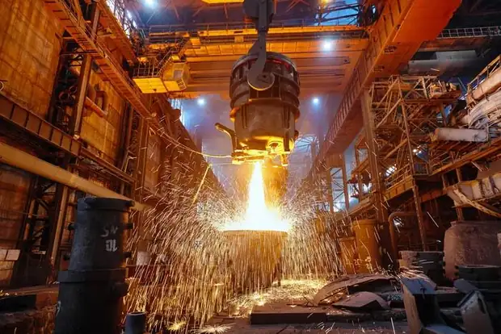
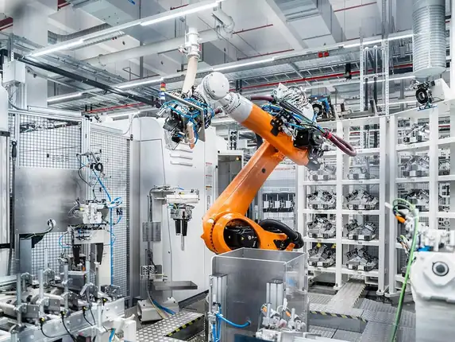
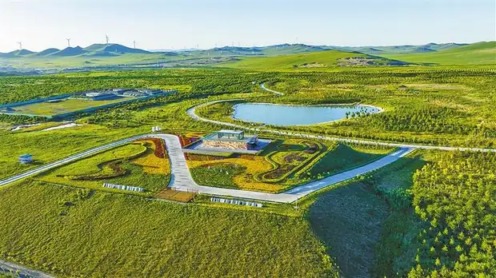
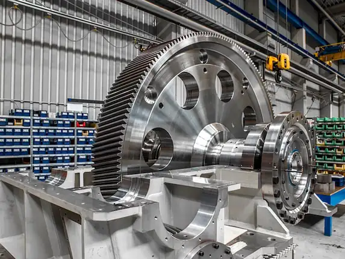
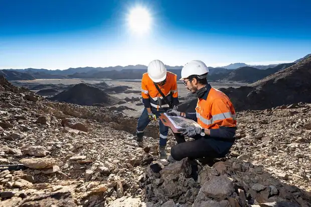

Visitor Information
Plan your visit: registration, entry and practical information for IMDX 2027.
Explore Solutions, Connect Partners, Grow Your Business.
Join Indonesia's comprehensive exhibition for mining, mineral processing, and downstream industries. Discover the latest technologies, meet industry players, and explore new business opportunities across the mining and energy value chain.

- 26 – 28 May 20273 days of exhibition and business programs
- JIEXPO Kemayoran, JakartaIndonesia

More than an exhibition.
A strategic platform to gain market insights, discover innovations, meet key decision-makers, and build valuable partnerships in the mining and energy industry.

Expand Your Network
Meet industry leaders, government representatives, and potential business partners.

Discover New Solutions
Explore the latest technologies, equipment, and services for mining and downstream industries.

Gain Market Insights
Get updates on industry trends, regulations, and investment opportunities.

Join Industry Dialogue
Take part in conferences, forums, and networking sessions with key stakeholders.
A complete mining and energy value chain.
From exploration to downstream processing, IMDX 2027 brings together solutions across the entire mining and energy ecosystem.
- Mining
Equipment  Mineral
Mineral
Processing
Metallurgy
& Smelting Energy
Energy
& Power
Smart Mining
& Digitalization
Green Mining
& ESG
Supporting
Services
Mineral Resources
& Products
Questions?
We've got you.
Find quick answers to common questions about visiting IMDX 2027.
Is there a registration fee to visit IMDX 2027?
Visitor registration is free of charge. Please register online in advance to receive your visitor pass and the latest event updates.
How do I register as a visitor?
Click “Register as Visitor”, create your account with your email address, and complete the visitor registration in your account. Your personal QR visitor pass is issued after your registration is confirmed.
Where is the exhibition venue and how do I get there?
IMDX 2027 takes place at JIEXPO Kemayoran, Jakarta, Indonesia. See The Venue page for the location, access and getting-there information. The Venue ↗
What can I expect at IMDX 2027?
Three days of exhibition, conferences and networking across the mining, mineral processing, metallurgy and downstream value chain.
Who can visit the exhibition?
IMDX 2027 is a business-to-business exhibition for industry professionals: mining and processing companies, government and associations, investors, engineers, buyers and other stakeholders of the mining and energy sector.
Plan Your Visit to IMDX 2027
Register now to get your visitor pass, receive the latest updates, and be part of Indonesia's leading mining and energy exhibition.